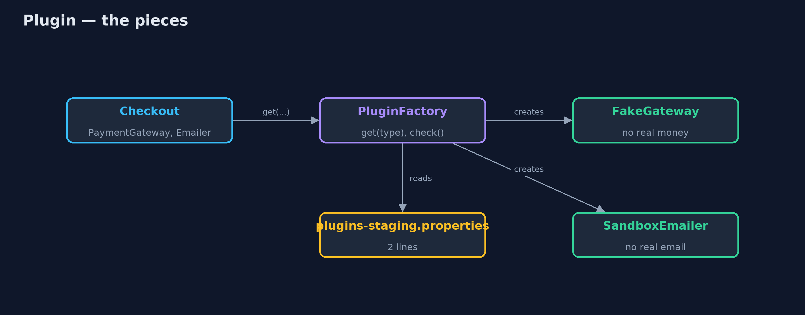
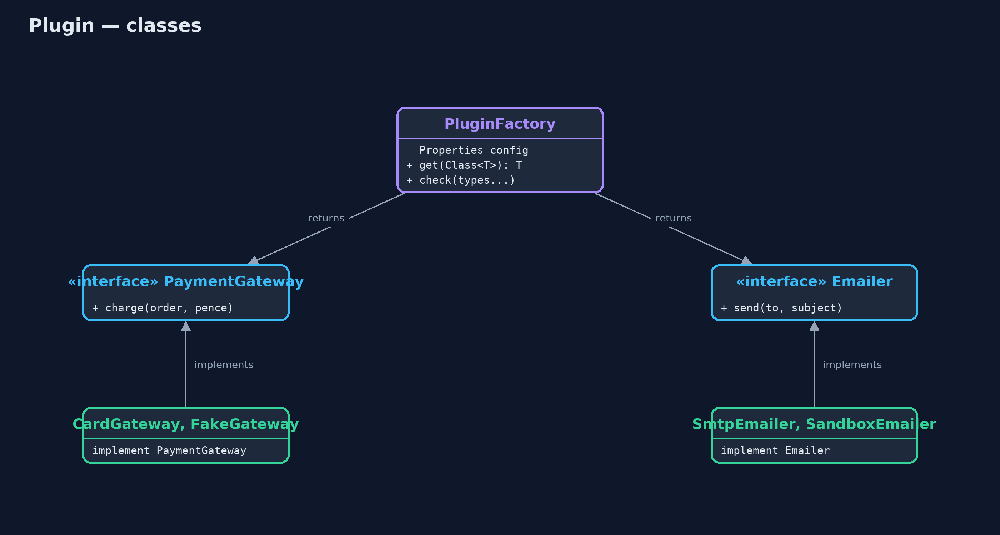
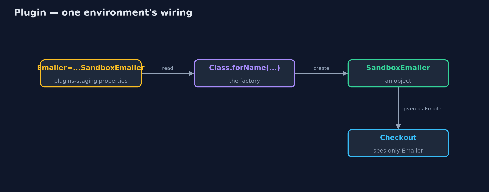
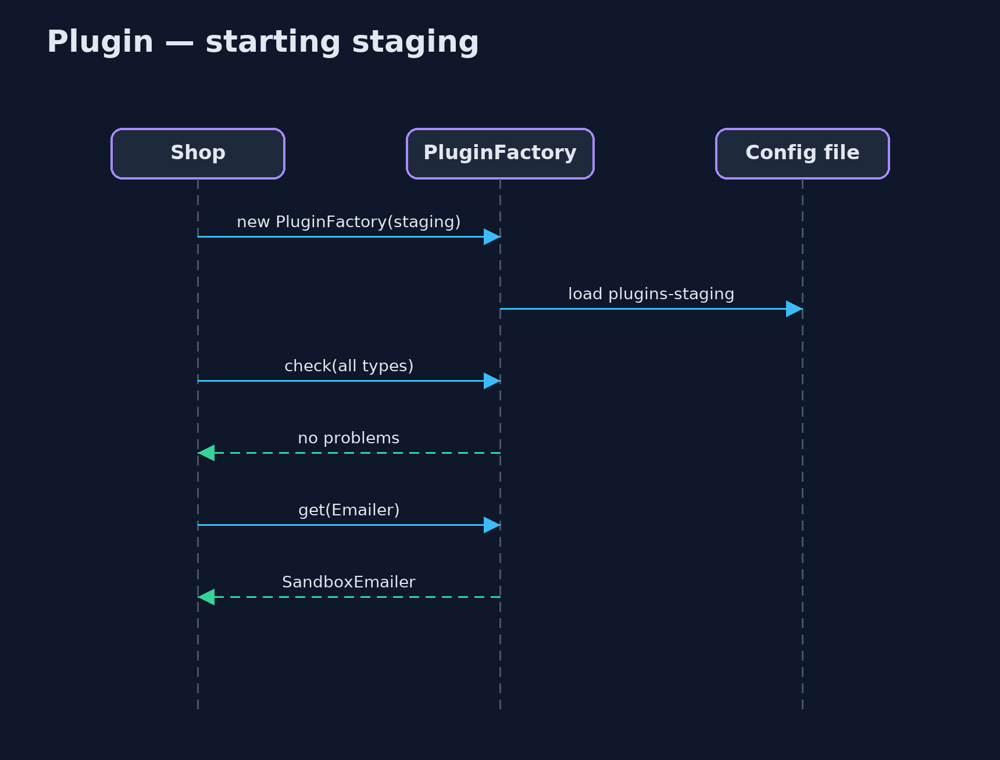

Plugin Pattern
src/main/java/com/jk/explore/plugin/
├── Checkout.java Checkout, which only knows the interfaces it is given
├── Implementations.java The real and the safe versions of each service
├── PluginDemo.java The five acts: choices scattered in code, plugins from configuration, a new environment, a bad entry caught at startup, and the bill
├── PluginFactory.java The pattern: reads which class implements each interface from the environment's configuration file, and creates it
├── ScatteredChoices.java Without the pattern: every place that needs a service picks the implementation itself, from the environment name
└── Services.java What the shop needs from the outside worldLet the code name only interfaces, and let one configuration file per environment say which class plays each part.
Plugin is one of Martin Fowler's enterprise application patterns. The code asks for an interface, such as PaymentGateway, and never names the class that implements it. A configuration file for each environment (development, staging, production) says which class to use, and one factory reads the file and creates the object.
Choosing a different implementation for an environment becomes a change to a text file, made in one place, instead of an if statement repeated wherever the service is needed.
The idea in everyday terms
Think of a theatre. The script says "Hamlet enters". It never says which actor. A cast sheet on the noticeboard says who plays each part tonight: the lead actor in the evening, the understudy at the matinee. To change who plays Hamlet, you change the sheet, not the script.
The scenario
The online store runs in three environments: development on laptops, staging for testing, and production for real customers. Real card payments and real emails must only happen in production. Each place in the code that needed a payment gateway or an emailer chose one itself with an if on the environment name. When staging was added, the payment choice was updated and the email choice was missed, and staging emailed real customers.
Run
./gradlew runThe demo tells the story in 5 acts, each printing exact numbers that the tests check:
| Act | What it shows |
|---|---|
| 1. Choices scattered in code | In staging, the gateway choice gives the fake gateway, but the email choice falls through to the REAL emailer. |
| 2. Plugins from configuration | plugins-dev.properties and plugins-prod.properties name the classes; dev gets fakes, prod gets the real services. |
| 3. A new environment | Staging is a two-line file: fake gateway and sandbox emailer; no Java changed. |
| 4. Caught at startup | A demo file misspells SandboxEmailer; the startup check reports it before any customer arrives. |
| 5. The bill | A misspelt class is a startup error, not a compile error; find usages of SandboxEmailer shows nothing. |
Test
./gradlew test8 tests in DemoRunsTest, PluginFactoryTest. Every number the demo prints is asserted, and nothing depends on the clock, so every run gives the same result.
Technologies and versions
| Technology | Version | Used for |
|---|---|---|
| Java | 21 | the code (toolchain set in build.gradle) |
| Gradle | 9.2.1 (wrapper) | build and run, nothing to install |
| JUnit | 5.10.2 | the tests |
| videokit | repository tool | the narrated video and animation: Piper en_US-amy-medium, speed 0.8, longer pauses (the approved amy-slow voice) |
Learning Material
| Document | What it is for |
|---|---|
| Problem statement | the situation and what the project must show |
| Prerequisites | what you need to know first |
| Plugin, explained | the acts in prose |
| Session guide | a one-hour lesson with exercises |
| Animated walkthrough | the acts step by step, narrated |
| Spec | what this project must be true of |
The pattern in one picture
The factory reads the environment's file and hands checkout the right objects.

Where each piece sits
Interfaces for the code, implementations named only in configuration.

How the data moves
From a line of text to an object checkout can use.

Who calls whom, in order
Read, check, then serve.

Video
video/plugin-pattern-explained.mp4 (with .m4a audio and .srt subtitles) is built by video/build_video.sh. Rendered media is not committed.
What it costs
- Errors at startup, not compile time. A misspelt class name compiles fine and fails when the shop starts.
- Invisible wiring. "Find usages" of an implementation shows nothing, because it is only named in text files.
- Reflection. Classes are created from their names, which needs a public no-argument constructor.
- Config files to keep in step. One per environment, each listing every plugin.
When this is too much
When there is only one implementation, or the choice never changes between environments, just create the object. And a dependency injection framework such as Spring already provides this pattern with profiles; use it rather than writing your own factory in an application that has one.
Where you have already met this
- Java's
ServiceLoaderandMETA-INF/servicesfiles. - Spring profiles and
@ConditionalOnProperty, which choose beans per environment. - JDBC drivers, logging back ends such as SLF4J bindings, and servlet containers loading web apps.
Where this sits
This project is in enterprise-design-patterns, next to Service Stub, which is what a plugin often swaps in for development and testing.